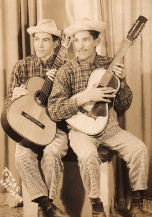

História do Sertanejo
A música sertaneja é um dos gêneros mais autênticos e emblemáticos da cultura brasileira. Sua origem remonta ao início do século XX, quando os cantos do povo do interior começaram a ser registrados com mais atenção. Nascido nas zonas rurais do Sudeste e Centro-Oeste do Brasil — especialmente em estados como São Paulo, Minas Gerais e Goiás — o sertanejo surgiu como a voz dos camponeses, dos trabalhadores do campo, dos que viviam longe dos grandes centros urbanos. Era uma música que falava da vida simples, da lida na roça, da fé, da natureza e dos valores familiares.

O instrumento que marcou esse começo foi a viola caipira, de origem portuguesa, com suas dez cordas e som peculiar, que se tornou inseparável das modas de viola — canções narrativas muitas vezes compostas em forma de dueto. O modo de cantar era característico: vozes anasaladas, em terças paralelas (um cantava a melodia, o outro a terça acima), que se tornaram uma das marcas registradas do gênero. Ainda nos anos 1920, nomes como Cornélio Pires foram fundamentais para registrar e divulgar essa música. Cornélio, um jornalista e folclorista apaixonado pela cultura caipira, financiou com recursos próprios a gravação dos primeiros discos de música sertaneja. Essa iniciativa pioneira, em 1929, marcou o começo oficial do que mais tarde se transformaria em um fenômeno nacional.

Durante as décadas seguintes, o sertanejo se consolidou como música regional, mantendo suas raízes rurais. As letras exaltavam a simplicidade da vida no campo e traziam personagens comuns, como o boiadeiro, o lavrador e o violeiro. Nas décadas de 1940 e 1950, a música passou a ser mais difundida por meio do rádio, e duplas como Tonico & Tinoco e Cascatinha & Inhana se tornaram populares. Ainda assim, o gênero continuava restrito a um público específico, principalmente do interior.
Foi a partir dos anos 1970 que a música sertaneja começou a mudar de forma mais expressiva. As influências da música romântica e do country americano começaram a penetrar no estilo, dando origem ao chamado "sertanejo romântico". As letras passaram a falar mais de amor, dor de cotovelo e saudade, com uma linguagem mais universal e urbana. Foi nesse contexto que surgiram nomes como Milionário & José Rico, Trio Parada Dura e João Mineiro & Marciano.
Nos anos 1980, a chegada de duplas como Chitãozinho & Xororó, Leandro & Leonardo e Zezé Di Camargo & Luciano foi um divisor de águas. Esses artistas modernizaram o sertanejo, incorporando elementos da música pop e da produção mais sofisticada. Foi também quando a televisão passou a dar mais espaço ao estilo, ajudando a torná-lo popular entre públicos diversos e de todas as regiões do Brasil. As músicas passaram a ser trilhas de novelas, e os shows migraram do interior para os grandes centros.
A década de 2000 trouxe uma nova guinada para o gênero: o nascimento do sertanejo universitário. Com uma batida mais leve, dançante e acessível, ele ganhou as festas de jovens nas faculdades e se espalhou como um furacão. Jorge & Mateus, Luan Santana, Gusttavo Lima, César Menotti & Fabiano e Fernando & Sorocaba são alguns dos nomes que despontaram nesse período e que ajudaram o sertanejo a se tornar o gênero mais ouvido do Brasil. As letras agora misturavam amor, festa, superação e até flertes com o humor. Era o sertanejo mais pop, mais jovem, mais digital — e ainda assim com raízes firmes na tradição de contar histórias que tocam o coração.
Ao longo dessa trajetória, o sertanejo também abriu espaço para a ascensão feminina com o movimento conhecido como "feminejo". Mulheres como Marília Mendonça, Maiara & Maraísa, Simone & Simaria e Naiara Azevedo romperam barreiras em um estilo historicamente masculino. Elas trouxeram novas temáticas — como o empoderamento feminino, o fim de relacionamentos tóxicos e a liberdade emocional — e mostraram que o sertanejo também é voz da mulher brasileira. A força dessas artistas não só quebrou recordes de visualizações e premiações como também consolidou um novo capítulo dentro do gênero.
Hoje, o sertanejo é uma mistura viva de tradição e inovação. Ele continua forte nas raízes caipiras, mas também sabe dialogar com o pop, o funk, o eletrônico e até o trap. É possível ver em uma mesma playlist desde Sérgio Reis e Tião Carreiro até Zé Neto & Cristiano e Ana Castela. E mais do que um estilo musical, o sertanejo virou um reflexo do Brasil — um país que muda, evolui e se adapta, mas que nunca esquece de onde veio. Essa música, nascida nas estradas de terra e nos quintais do interior, encontrou seu caminho até os grandes palcos, sem perder a alma.
A história do sertanejo é, no fundo, a história de um povo: resiliente, romântico, batalhador e apaixonado por contar suas vivências em forma de canção.

11 8765-4321
11 98765-4321
Rua Haddock Lobo, 595 - Cerqueira César,
São Paulo - SP, 01414-001